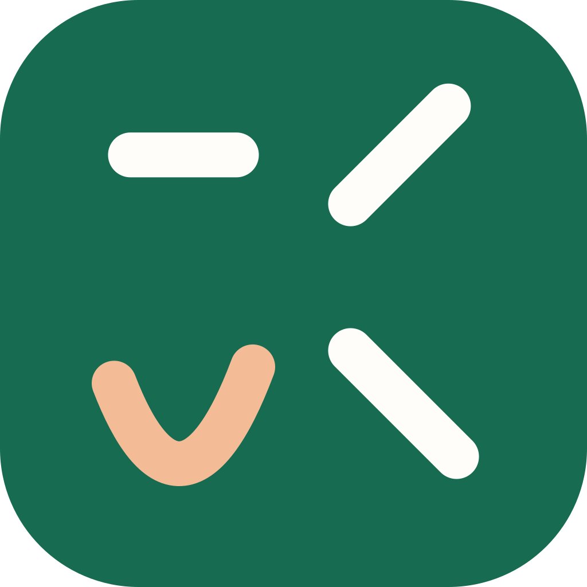

Mandarin Tone Trainer
A little listening, every day.
What did you hear?
Choose one tone per syllable.
Practice your pronunciation Record, listen, compare
Say the word, then listen to your voice beside the original. Your recording stays on this device.
Practice settings Audio sources & tone changes
Guided listening · Glossika
Explore the lessons.
Listen with the book, then bring an example into practice.
About these recordings
Chinese Pronunciation & Tone Training. Copyright 2018 Glossika. All rights reserved. Personal companion use only. The original recordings stay with their book pages; individual examples use verified intervals from those recordings. Publisher-source mapping is not independent pronunciation certification. Consonant pages are associated by section order.
About and audio credits
This offline trainer uses human Mandarin recordings from the CC-BY-SA audio-cmn corpus, definitions from CC BY-SA CC-CEDICT, and public-domain pinyin audio for tone comparisons. Ordinary practice sources use acoustic screening or explicit listening approval for the exact recordings and labels. Local Glossika drills instead use publisher-source labels with verified parent-file hashes and exact interval mappings. That mapping provenance is not independent pronunciation certification, and automatic screening is not a guarantee of accuracy.
Mandarin Native: external listening reference (online). Checked direct word recordings are also available in the local-use app. Sentence audio is not used for practice; local-use imports are excluded from redistributable builds.
Local-use builds also include screened Mandarin Chinese Tone Pair Drills by John Pasden, Sinosplice.com, under CC BY-NC-SA 2.5. Noncommercial use only; attribution and ShareAlike terms apply. Source files are unchanged; playback adds silence padding and level protection. Creator credit does not identify the speaker.